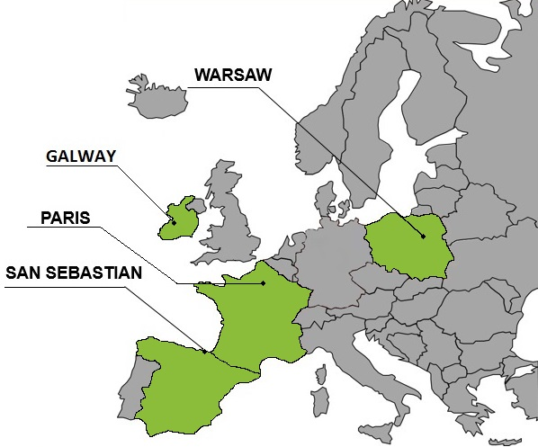
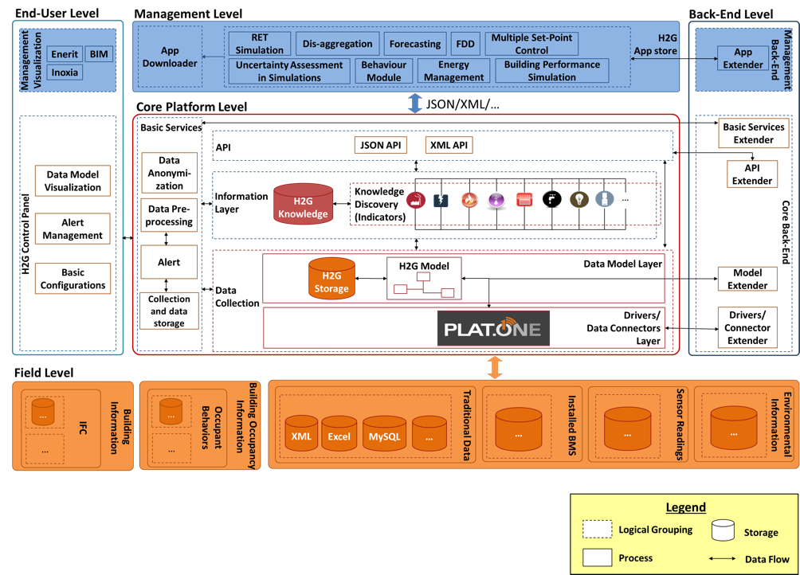

HIT2GAP use cases in VoCamp
Presenter: Aitor Corchero Rodríguez
Unit: Smart Management Systems
HIT2GAP Overview

- Reduce the Gap between energy simulations and real energy consumption
- Enhance user comfort in the buildng decision-making
- Provide a unique environment for diverse building tools (simulations, analytic tools, DSS, etc)
HIT2GAP Overview

HIT2GAP Actors
- Improve User Comfort
- Improve awareness and knowledge regarding best practices for energy efficiency
- Enhance behavioral change of the occupants activities and patterns
- Improve energy monitoring in public buildings
- Support the reduction of energy real consumption and the energy simulation gap.
- Improve building interaction and behavior analysis
- Improve current energy monitoring and existent policies to include user comfort.
Defined Use Cases
| Use Case | Stakeholders | Products | Devices | Control | Behaviour | GeoServices |
|---|---|---|---|---|---|---|
| Building energy management system, considering user comfort and occupancy |
|
X | X | X | X | X |
| Recommendations and suggestions for the building managers regarding energy and user comfort |
|
X | X | X | X | X |
| Building energy management system, considering user comfort and occupancy |
|
X | X | X | X | X |
| User comfort recommendation's based on their current state | Occupant | X | X |
Data Models
| Domain | Data Requirements | Existing Schema |
|---|---|---|
| Product |
|
|
| Device/Building Data |
|
|
| Behaviour Modelling |
|
|
| Geo-Services |
|
|
Thank you
www.eurecat.org
Aitor Corchero Rodríguez
Smart Management System
aitor.corchero@eurecat.org
aolite
https://es.linkedin.com/in/aitorcorchero